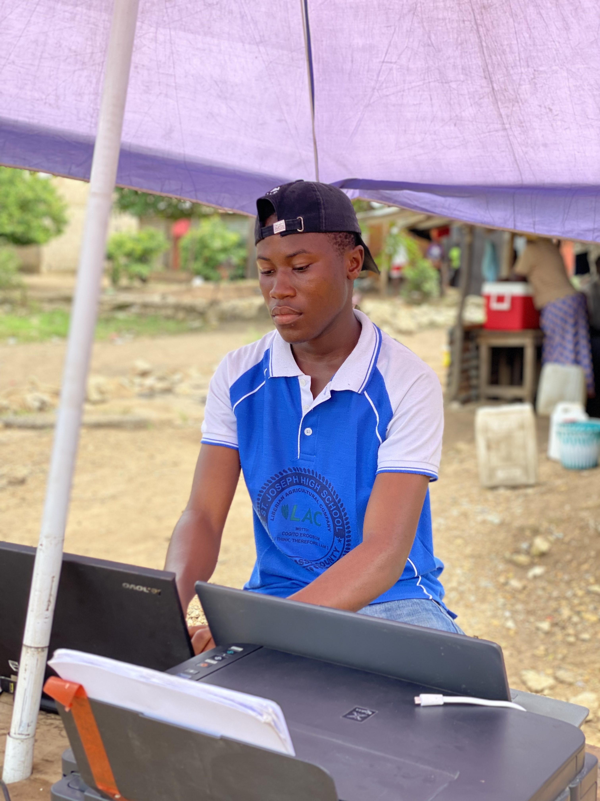
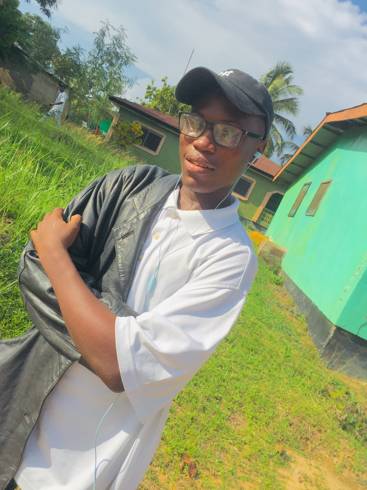
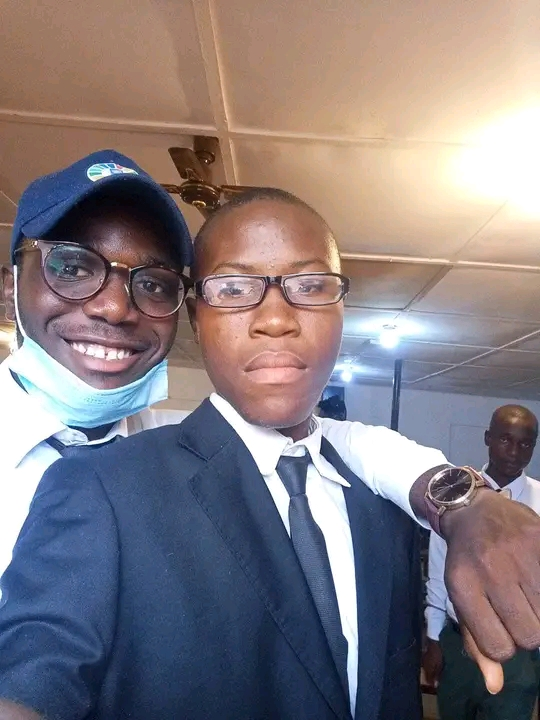
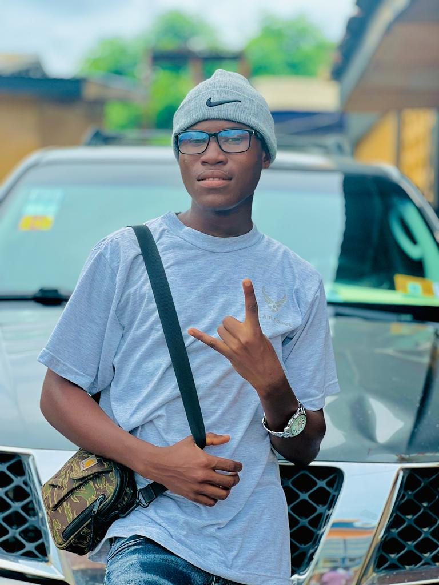
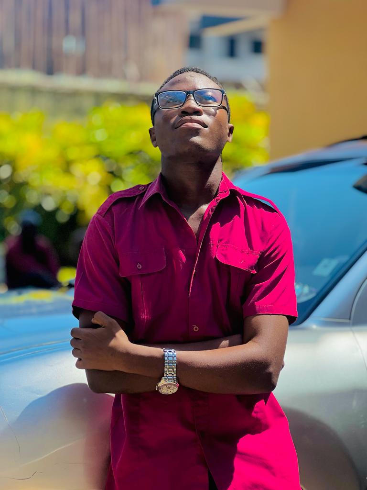

sssssssss
My name is Alexander A.M. Zodon. I was born unto the union of Mr&Mrs Zodon at the LAC Hospital located in Grand Bassa County to be precise wee statory District#3A Republic of Liberia in 2003 the seventh month. My fovorite sprts are BAsketball and Soccor. I don't love too muck talking and very quick to get angry. I was involved into the act of picking over my paretnts food.When I turn ten I decided to put an end to that habbit. I am very intelligent. All of my lives I have necer celebrate my birthday or its been celebrated by my Parents or any relatives. I love playing Ludu and Checkor games, but for now I play only checkor game. I love watching African Movies especially those ones that have village play in it. My favorate food is fu-fu and soup. I love cooking in which I was thougt by my mom and sis, in which I decided to forward my cooking skill in which I went ot a catering school
Below are some of my pictorials

My pratical area.
This is my partical and transportation area located at Du-port Road Junction Paysenville City Montserradeo County.

My third sunday mood.
This is my third sunday mood at Greater Refuge Interantional Ministries located in Du-port Road Zubah Town

After a feneral
This is my mood after a bruial in Zubah town District 4 Montserrado County Republic of Liberia.
my country of orign
I am a Liberian by birth. According to Civics Citizenship is acquired through Birth and Naturalization,but for me I gain my citizenship by Birth.
My county of Orign
I Orginated from grand Bassa County to be specifice District#3A
to be specifice Wee Satatory District Liberain Agricultual Company (LAC) BIA-BIA CAMP
Brife Information about my Secondary Schools.
I starte my primary kEkduction aththe Estate Four (4) Elementary School System located in Grand Bassa County in 2009.After four years of studies, I move to the Blessed Allamano Elementary &Junior High School LAC School System.During the Academic 2013-2014 I was the dux of the fourth Grade 4B. The next year I mentain the position of the first dux. Again in the six grande I drop from the first position to the second position. When I enter the Junior High division my academic performances increased that my parents was very much pruod of me. The entire year I spend in the Junior High division I was always among the first four dux. I wrote the national Exam during the Academic 2018-2019 in which I pass all subjects. The next Academci I was promoted to the Senoir High Division in which I had to move to the LAC St.Joseph High School in 2019-2020.Druing that Academic year the 10th grade had four sections in which I found part of the C section and the entier first semester I tooked the first place in the section, after few months we started to hear about the CORONAVIRUS in this nobal Country. Meanwhile the Ministry of Education put a hut to the Education System for some monts. After serverals months away from school,We was given the instruction by the ministry of Dcucation to resume school and take into consideration the preventatives measure put inot place by the Ministry of Health. I wort the International Exam in 2021-2022 Academic. I am a science Studends in which I sat for seven subjects and I was able to pass six Subjects including MATHS&ENGLSISH and the most of all I was again able to pass all my science subjects.
some of my secondary school pictorials

My University Life
I started schoolding at Starz University during the second Semester of 2022. I wrote the entrance in July and pass two subjects and gain admission at the IT college. My Univerrsity Life hs been very diffivult for me in the sense that I was not hving any knowledge in so doing I having been doing everything in my own way to get ceriffate from other Training instituations to be for real I didn't enjoy the first semester at Starz University and even the Second Semester too I really expecited us to go in depth, but we only lern aabout the surface . I'm doing BIT at Straz Unversity with xoncentration in Sustem Administration. My dream is to bexom e a networker.
Some of my University Pictorials.

